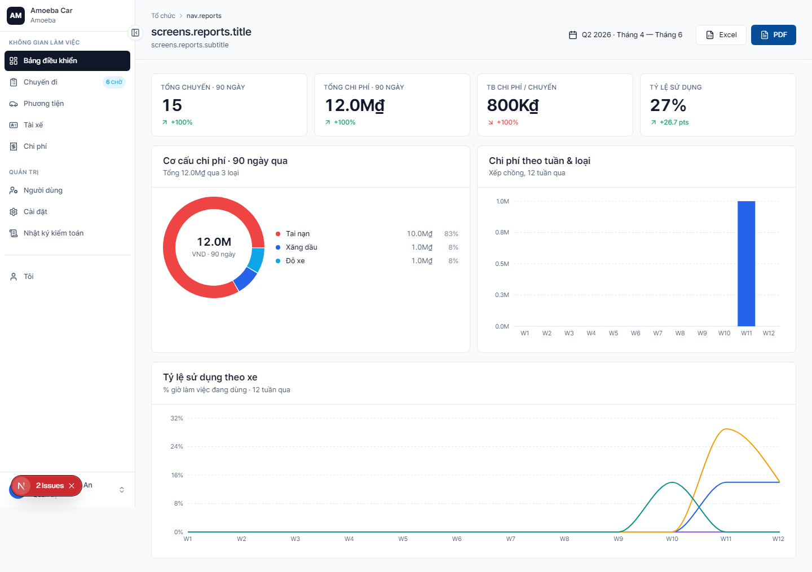

Báo cáo & Phân tích
- URL
/reports- Đối tượng
- Admin only (Manager dùng /costs để tạo báo cáo cá nhân)
4 nhóm KPI + biểu đồ

1. KPI tổng (4 card)
- Tổng số chuyến trong kỳ + delta % so kỳ trước
- Tổng chi phí + delta
- Chi phí TB/chuyến + delta
- Tỉ lệ sử dụng đội xe (Fleet Utilization %)
2. Spend Mix (donut chart)
Phần trăm 8 loại chi phí (FUEL/REPAIR/MEAL/OIL/ACCIDENT/PARKING/TOLL/INSPECTION) trong tổng chi.
3. Weekly Spend (stacked bar chart)
12 tuần gần nhất, 4 loại chính (Fuel/Repair/Meal/Oil) chồng lên — dễ nhận xu hướng.
4. Fleet Utilization (line chart)
% thời gian sử dụng từng xe theo tuần — xe nào quá tải / xe nào nhàn rỗi.
Bộ lọc kỳ báo cáo
- Tháng này (mặc định)
- Tháng trước
- Quý này / Quý trước
- Năm nay / Năm trước
- Tùy chỉnh — từ ngày → đến ngày
Xuất file
- Xuất Excel — file
.xlsxnhiều sheet (KPI, Spend Mix, Weekly, Utilization) - Xuất PDF — report A4 với biểu đồ embedded
🚧
Một số tính năng đang hoàn thiện: period selector + Export PDF/Excel hiện là stub. Đang được implement ở P5. Trong khi đó, xuất CSV qua /costs để có dữ liệu tạm thời.